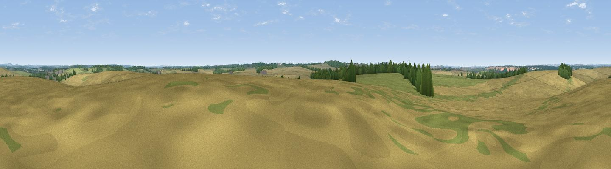

Moody's Down
#39353 in England · top 76% of its area beats it · near Barton StaceyWhere it is
The exact computed spot (SU 42625 39514). Click the marker for map links.
The view, rendered

A 360° render of this exact spot computed from the terrain model, tree cover and land cover — summer colours, afternoon light, calibrated against photographs of famous viewpoints. Real trees, hedges and buildings will differ in detail.
The panorama
Grey silhouette: terrain skyline in each direction (720 bearings, Earth curvature and refraction included). Dashed green: skyline with trees (+15 m) and buildings (+8 m) as obstacles. Blue strip: how far the ground is visible on each bearing.
Where the view opens
Wedge length = distance to the farthest visible ground on that bearing (vegetation-aware). Rings at 10, 25 and 50 km.
What fills the view
65% cropland · 27% grassland · 7% woodland
Angular shares of the visible panorama (visual magnitude), not map area. Landscape diversity 0.36 (0–1 Shannon).
Key numbers
More beautiful places nearby
The staircase of upgrades: each row has a higher view potential than everything closer. Driving times are estimates from straight-line distance, calibrated against real road routing — check an actual route before setting out.
| Place | Direction | Drive | Score |
|---|---|---|---|
| Newton Down | N · 2 km | ~4 min | 45.6 |
| Tidbury Rings | NE · 5 km | ~11 min | 47.0 |
| Viewpoint near Crawley | SSW · 5 km | ~11 min | 50.9 |
| Viewpoint near Stockbridge | SW · 6 km | ~12 min | 63.3 |
| Viewpoint near Stockbridge | SW · 7 km | ~14 min | 64.3 |
| Viewpoint near Sparsholt | SSW · 11 km | ~20 min | 66.9 |
| Viewpoint near Old Burghclere | N · 17 km | ~30 min | 67.5 |
| Beacon Hill | N · 18 km | ~31 min | 76.7 |
51.15330, -1.39193 · source: osm peak · position refined by local search. Computed location — check access rights before visiting.